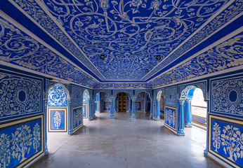
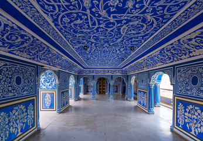

About City Palace
The City Palace in Rajasthan stands as a magnificent testament to the rich history and opulent culture of the region. Located in the heart of Jaipur, the capital city of Rajasthan, this sprawling complex is a captivating blend of Rajput and Mughal architectural styles, reflecting the grandeur and sophistication of its erstwhile rulers. Built in the early 18th century by Maharaja Sawai Jai Singh II, the founder of Jaipur, the City Palace served as the seat of the Maharaja of Jaipur and continues to be the residence of the royal family, albeit in a part converted into a museum open to the public.
Upon entering the City Palace, visitors are greeted by a series of majestic courtyards, gardens, and buildings that showcase the rich heritage of Rajasthan. The intricate carvings, vibrant murals, and ornate decorations adorning the walls, ceilings, and doorways are a testament to the skill and craftsmanship of artisans from centuries past. One of the most striking features of the palace is the Chandra Mahal, a seven-storeyed structure adorned with intricate lattice work, vibrant paintings, and exquisite mirror work. It is still occupied by the descendants of the royal family and only a portion of it is open to the public.
The City Palace Museum, housed within the complex, offers visitors a fascinating insight into the royal history of Jaipur. Exhibits include an impressive collection of royal costumes, weaponry, paintings, manuscripts, and artifacts dating back to the bygone era. Among the notable attractions within the palace complex is the Mubarak Mahal, an elegant building that once served as the royal reception area and now houses a fine display of textiles and costumes.

 
